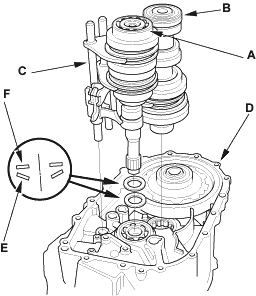
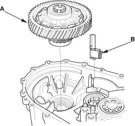
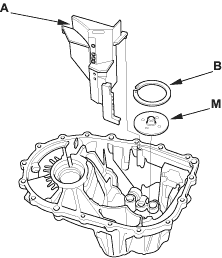

- Apply tape to the mainshaft splines to protect the seal, then remove the mainshaft assembly (A) and countershaft assembly (B) with the shift forks (C) from the clutch housing (D).

- Remove the 28 mm spring washer (E) and 28 mm washer (F).
- Remove the differential assembly (A) and magnet (B).


- Remove the oil gutter plate (A), oil guide plate M, and 72 mm shim (B).
